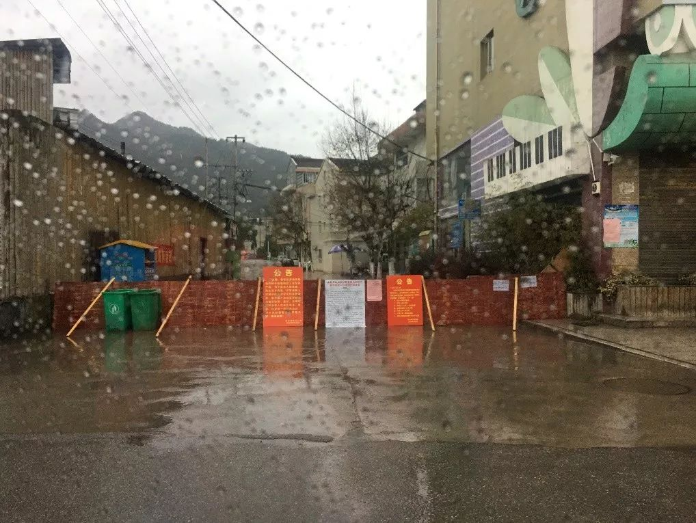
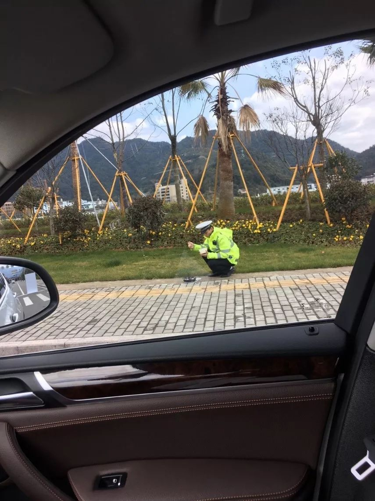

口述实录 | 肺炎疫情之下，我的小公司也许只能勉强撑三个月
原文链接 备份链接 我想说，我们再困难也会响应政府号召，去打赢这场新冠肺炎病毒阻击战！ 口述 | 李安定 整理 | 金 姬 我是70后上海人，生于斯长于斯。大学毕业之后的十几年间，我主要从事机电设计顾问方面的工作，在美资、港资和内地几家大 …

平时生活节奏太快，就像开车开到120码，突然停下，大家都不适应。
口述 | 严 欣
**整理 | 王仲昀**
很多温州人在外经商，每到春节就要回老家过年，我们一家是年前从上海回来的。
全国人民都在新闻中看到，约18万温州人在武汉，其中有4.8万人从武汉回来。目前我们温州新冠肺炎疫情的形势比较紧张，生活方式也完全被改变了。
我老家在温州市永嘉县下面的一个乡镇，叫桥头镇，距离温州市区大概30公里，开车一会就到了。过年前母亲生病了，在温州市区住院，之前我要经常从村里开车去温州市区。老人家年纪大了，我们姐妹几人就轮流去看望和照顾她。
一开始我们给母亲请了保姆，有时候我们和保姆都会在医院照顾她。但是随着疫情越来越严峻，温州的防控不断升级。到后来，医院通知说，一个床位只能一人陪护了，所以要么我们在，要么保姆在。
温州市区从2月1日开始，规定每家每两天可指派1名家庭成员出门采购。从那时候开始，住在市里面的妹妹就每两天出门买东西，顺带去医院看望一下母亲。
这次新冠肺炎疫情暴发后，温州的县级市乐清情况最严重。乐清距离我们永嘉大概70公里。永嘉这里还好，至少我所在的镇上，目前为止只有一人被确诊。我了解到的情况是，这人过年前从武汉回来，不过他回来比较早，当时还不像现在这么严峻。那个人现在已经痊愈，所幸他家人现在也都过了14天隔离期，没有被感染。

村与村之间的道路几天前已经被封闭
虽然不像乐清那么严重，但是永嘉的防控也在不断加强，这一点我深有体会。
一开始进出我们镇的交通是畅通的，后来开始“半封闭”——你如果想出去，可以去镇政府开一个通行证，只要你有正当的理由。比如你要回工作的地方上班，那么你让单位给你开一个证明，一般都会给你通行证。像我，因为母亲住院，我隔几天要去温州市区探望她，我也有这个通行证。
完全“封镇”前，居民依靠通行证进出
没过多久，交通就完全封闭了。2月5日下午3点，我们这里除了医护人员、警察还有政府的人员，其他人一律进不来也出不去。我外甥本来要回广东上班的，现在连镇都出不去了。我也没法去医院看我母亲，就只好指望温州市里的妹妹。虽然封镇了，但是我们生活还是有保障的。现在附近的一些大型菜市场和超市还开着。
这几天我跟家人朋友们说，叫大家没什么特殊情况就别到处跑了。管好自己，也就不给别人添麻烦。我去医院看望母亲路上来回的时候，好几次看到镇路口那些年轻的交警和其他工作人员，他们连吃饭的地方都没，就坐在路边吃快餐。
我想说，大家就别给他们带去不方便了，换位思考，这些小伙子如果是自家孩子，我们不会心疼吗？
过年那几天我就跟家人说，大家别互相串门了，我们就微信上发个红包，拜个年。不是我怕死，这真的是为了减少自己和他人的麻烦。

交警坐在路边吃饭
前几天，除了担心我母亲，我也在为女儿开学而发愁。她在上海读书，本来正常开学是2月17日，我得早点带她回去，这样14天隔离结束了她能赶上开学。不过看到上海那边通知说不会在3月之前开学，我也放心了，暂时就在老家继续呆着。

完全“封镇”后的路口
女儿班级的家长群里，老师和其他家长也关心我们，因为知道我们回温州老家过年，这边疫情又比较严重。每个孩子的家长，现在每天都要填写学校发的问卷，就是报告人在哪里，小朋友在家做什么，这些信息都要向老师汇报。我们家长也能看到彼此的问卷，这样大家都放心了。我跟其他家长说了，你们不用担心，我和女儿回上海后，肯定自觉在家隔离14天。
这次疫情，对老百姓来说，就像是一次生活的“急刹车”。
平时在城市里，上班啊忙啊加班啊，都成了常态。周末或者节假日能休息几天，特别开心。现在别说加班了，上班也不用去，大家都天天在家呆着，突然觉得很不习惯。往年我最晚初五就和家人回上海了，今年一直到现在，还不知道什么时候能离开。
平时生活节奏太快，就像开车开到120码，突然停下，大家都不适应，我也期盼疫情能够早日结束，我的老家温州以及全国各地的生活都能恢复正常。
（本文图片均由受访者本人提供）
征集令
“战疫”成败，匹夫有责。
《新民周刊》现面向全国征集新冠肺炎采访对象和真实故事：
如果你是参与抗击新冠肺炎疫情的医护人员或其家属，我们希望聆听你的“战役”故事，也希望传达你的诉求。
如果你是确诊、疑似患者本人或家属，我们希望了解你和家人如何“抗疫”的过程，让外界了解你的真实经历。
如果你是疫情严重地区的普通市民，我们希望展现你的乐观，并倾听你所需的帮助。
如果你是公共服务人员或各类捐助者，我们希望看到你的“最美逆行”，记录下你的无私。
……
抗击新冠肺炎疫情，我们诚征对疫情了解的社会各界人士，提供相关线索，说出你的故事，让我们用新闻留存这一切。
《新民周刊》新冠肺炎线索征集值班编辑联系方式（添加时请简要自我介绍）：
周一：应 琛 微信号：paulineying0127
周二：金 姬 微信号：gepetta
周三：黄 祺 微信号：wxid_bf5mudid7oz322
周四：周 洁 微信号：asyouasyou
周五：孔冰欣 微信号：kbx875055141
周六：吴 雪 微信号：shyshine1105
周日：姜浩峰 微信号：jianggeladandong
新闻是历史的底稿，你们是历史的见证者。期待你的故事、你的线索！

▼
大家还都在看这些
▼
转载请在评论区留言，获得授权！
转载时，须注明作者、出处和微信号


原文链接 备份链接 我想说，我们再困难也会响应政府号召，去打赢这场新冠肺炎病毒阻击战！ 口述 | 李安定 整理 | 金 姬 我是70后上海人，生于斯长于斯。大学毕业之后的十几年间，我主要从事机电设计顾问方面的工作，在美资、港资和内地几家大 …
原文链接 备份链接 我住在汉口，是这次疫情的重灾区。那个被查出疫情源头的华南海鲜市场，就在火车站对面，离我家大概20公里。我希望疫情早日结束，对我们国家的经济影响小一些，所有人都能够平安和健康。 口述 | 小 玲 整理 | 沈 林 我叫小 …
原文链接 备份链接 编者按：上海市第一人民医院呼吸科的谢国钢医生，2月1日报名了支援上海公共卫生临床中心医疗队。清晨5点，值班的他接到了报到的电话通知，连家都来不及回，就匆匆奔赴了“战场”。要知道，谢国钢医生12月份才刚刚结束为期半年的援 …
原文链接 备份链接 【财新网】（记者 黄蕙昭 综合）武汉市中心医院门前放满花束。7日凌晨3点48分，武汉中心医院官微发布李文亮医生抢救无效过世的消息。当日，手持花束的市民自发前往武汉中心医院，悼念在工作岗位被感染的李文亮医生。他曾因“发 …
原文链接 备份链接 唯一的方式就是隔离，继续隔离，将隔离进行到底。 口述 | 池 莉 **整理 | 何映宇** 今天只有一个强烈的呼吁——已经呼吁多天了，要采取切实隔离措施与行动到社区！人们为了买食品蔬菜还在超市拥挤，极容易造成再次感染传 …